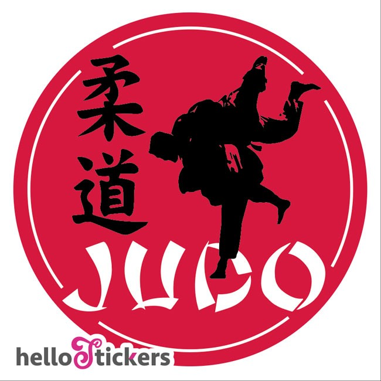

Le judo (柔道, jūdō?, litt. « voie de la souplesse ») est un art martial qui a été créé en tant que pédagogie
physique, mentale et morale au Japon par Jigorō Kanō en 1882. Par rapport au kobudo1 ou voie martiale
traditionnelle de combat japonaise, le judo est ce qu’on appelle un Shin Budo c’est-à-dire une « voie
martiale moderne » qui connaît une branche qui a évolué en sport de combat puis en sport olympique en
1964, pour les Jeux olympiques de Tokyo.
Ayant trois densho de maître d'arts martiaux correspondant à des Menkyo2 ou autorisation de délivrer l'
enseignement, à l’âge de 21 ans, Jigoro Kano (1860-1938) adopte sa propre méthode, et lui donne le nom
de « Judo Kodokan», en 1882. En 1920, Il définit la philosophie de son art par deux maximes : « Seiryoku
zenyo » (la bonne utilisation de l'énergie) et « Jita Kyoei » (entraide et prospérité mutuelles).
2.Signification du logo

Signification du kimono.
Le véritable nom de la tenue du judoka est le judogi. En effet, le terme kimono désigne l'intégralité des
vêtements traditionnels japonais et non uniquement la tenue d'arts martiaux.
Au judo, il y a 2 couleurs de judogi : blanc (le kimono de judo que tout le monde connait) et le bleu
(destiné à différencier les combattants lors des compétitions).
Les trois parties du kimono :
une veste (uwagi) :de 500 à 600 g/m², en tissage dit « simple », généralement destinés aux débutants ou aux enfants.
un pantalon (zubon) : de 600 à 750 g/m², en tissage simple ou doublé .
une ceinture (obi) : de 750 à 980 g/m², en tissage doublé, généralement orientés compétition.
3.Signification du nom Judo
Lettre japonaise
Correspondance dans le nom
Signification
柔
Ju
Le premier composé de neuf traits : signifiant souplesse, adaptation
道
Do
Le second composé de 12 traits : la voie, le principe
4-La pratique du Judo
Le 1re dan (Sho-dan) : correspond au nom japonais de deshi (en approfondissement).
Les 2e dan (Ni-dan) et 3e dan (San-dan) : correspondent au nom japonais de ushi-deshi (en formation supérieure).
Le 4e dan (Yon-dan) : correspond au titre de renshi-ho à partir de l’âge de 25 ans au moins (statut d’assistant-formateur), étape entre le pratiquant et l’expert .
Le 5e dan (Go-dan) : correspond au titre de renshi à partir de l’âge de 30 ans au moins (personne « forgée » : maîtrise extérieure).
Les 6e dan (Roku-dan) : à partir de l’âge de 35 ans au moins et 7e dan (Shichi-dan) à partir de l’âge de 42 ans au moins, correspondent au titre de kyoshi.
5-Notes et références
Pour suivre les derniers nouvelles et les événements nationaux et internationaux,
vous pouvez suivre la page du facebook officielle
cliquer ici